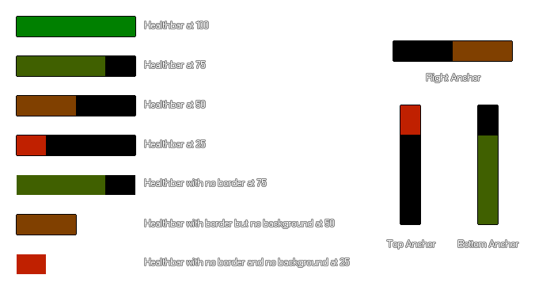

draw_healthbar(x1, y1, x2, y2, amount, backcol, mincol, maxcol, direction, showback, showborder);
| Argument | Description |
|---|---|
| x1 | The x coordinate of the left of the healthbar |
| y1 | The y coordinate of the top of the healthbar |
| x2 | The x coordinate of the right of the healthbar |
| y2 | The y coordinate of the bottom of the healthbar |
| amount | The variable which defines total health (between 0 and 100) |
| backcol | The color of the background for the bar |
| mincol | The color of the bar when at no health (0) |
| maxcol | The color of the bar when at full health (100) |
| direction | Where the bar is 'anchored' (0 = left, 1 = right, 2 = top, 3 = bottom) |
| showback | Whether the bar's background is drawn (true) or not (false). If false, the backcol argument is disregarded. |
| showborder | Whether the bar's elements have a 1px wide black border (true) or not (false). |
Returns : N/A
With this function you can draw a colored bar to show a constant value. Although the function uses the word "healthbar" you can use this to display anything you wish as long as the amount to be displayed
is a percentage value between 0 and 100 (a percentage of any value can be calculated with the formula (CURRENT_Value / MAXIMUM_value) * 100), so, for example, you can use this to
display power, health, mana, time or anything else that would benefit from a bar display.
You can set various different things that change the visual aspect of the bar and these are illustrated in the image below (note that the colors used here are c_green for the maximum
value and c_red for the minium value, but you can use the colors that you wish):

var pc;
pc = (hp / max_hp) * 100;
draw_healthbar(100, 100, 500, 200, pc, c_black, c_red, c_lime, 0, true, true)
The above code uses the percentage value that you get from the variables "hp" and "hp_max" to draw a standard red/green healthbar.